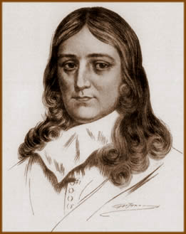

John Milton, filho do banqueiro
John Milton Senior e Sara Jeffrey, nasceu em 9 de dezembro
de 1608 em Londres, Inglaterra. Recebeu sua educação
formal na mesma cidade, no St Paul's School. Posteriormente,
em 1625, matriculou-se no Christ's College, em Cambridge,
ali permanecendo por sete anos até concluir os estudos
e formar-se em Artes, no ano de 1632. Assim, contrariando
o desejo paterno de que Milton seguisse a vida religiosa.
Milton, neste momento, com
apenas 25 anos, já se revelava um homem de mente
e espírito privilegiados, tendo se graduado com expressão
em disciplinas como filosofia, teologia, história,
política, ciências e literatura. Também
já era um ávido escritor de poemas e sonetos
em latim, italiano e, obviamente, inglês. Nesta época
ele compõe a obra L'Allegro, uma ode à
vida e hábitos no campo, e Il Penseroso,
como um complemento do primeiro, sendo um louvor à
contemplação e ao recolhimento. Ainda, dedica-se
à redação da peça teatral intitulada
Comus – Um disfarce, uma fábula mitológica
na qual aborda o conflito entre o bem e o mal.
Passa
alguns anos de sua juventude morando com seu pai em Buckinghamshire.
Neste período, teve a oportunidade de dedicar-se
intensamente aos estudos de matemática e de clássicos
como Dante, Tasso e Petrarca.
No ano de 1638, após
o falecimento da mãe, Milton viaja para a França,
Suíça e Itália, tendo conhecido pessoalmente
o físico e pensador italiano Galileu Galilei e se
aproximado do movimento renascentista. No mesmo ano compõe
a elegia Lycidas. A partir de 1641 tem início
sua fase mais criativa e produtiva. Milton elabora, além
de poemas, sonetos e peças teatrais, ensaios sobre
política e religião.
Em junho de 1642, já
atuando profissionalmente na área de ensino, casa-se
com Mary Powell de apenas dezesseis anos de idade. Porém,
cerca de um mês após o matrimônio, Mary
parte em visita aos pais e não retorna. Fato que
certamente influiu na produção literária
de Milton nos anos seguintes, publicando ensaios nos quais
defende com veemência a legalidade e os aspectos morais
do divórcio.
Em 1641, afrontou a doutrina
eclesiástica publicando Of Reformation Touching
Church Discipline in England (Sobre a reforma da disciplina
eclesiástica na Inglaterra). O contato com o professor
tcheco Comenius e com o educador inglês Samuel Hartlib
inspirou Milton a elaborar um tratado sobre educação
em 1644. No mesmo ano, publicou Areopagitica, um
discurso que defende a liberdade da imprensa e até
hoje é considerado uma das obras mais bem construídas
sobre o tema. Neste período, também participa
ativamente da política inglesa e ocupa cargos elevados
durante o período republicano.
Em 1645, Mary regressa e
Milton aceita seu retorno. O casal teria quatro filhos:
Anne, Mary, John e Deborah. No ano seguinte, Milton em boas
condições econômicas abandona o ensino.
Paralelamente, sofre com a perda de seu pai.
No ano de 1649 o poeta já
apresenta sinais da perda gradativa da visão. Foi
diretor do jornal Mercurius Politicus em 1651 e
abertamente defendeu a revolução em detrimento
da monarquia. Manifestou-se também em relação
à matança de protestantes na Itália
no episódio do Piemonte, através do soneto
On the Late Massacre in Piedmont (Sobre o recente
massacre em Piemonte).
Mary Powell falece em maio
de 1652 devido à complicações no parto
de Deborah. No mês seguinte, John de apenas 15 meses,
também falece. Estas perdas abalaram sensivelmente
Milton. Porém, neste momento, devido à saúde
debilitada, não chegou a ser detido após a
restauração da monarquia.
Em 1656 Milton casa-se com
Katherine Woodcock. No final do ano seguinte, Katherine
dá à luz a menina também de nome Katherine.
Porém, em fevereiro a esposa Katherine falece. No
mês seguinte, a filha Katherine também morre.
Em 1658 dá início à produção
literária de uma de suas obras mais relevantes: Paradise
Lost (Paraíso Perdido). Em 1660, empobrecido,
enfermo e contrário às condições
políticas da Inglaterra, recolhe-se e dedica o tempo
a compilar as próprias obras.
Em fevereiro de 1663, Milton
casa-se novamente. Elizabeth Minshull, de apenas 25 anos,
é sua terceira esposa. A esta altura, já completamente
cego e passando por sérias dificuldades financeiras,
dita o poema Paradise Lost que foi redigido em
versos não rimados e aborda sob uma perspectiva cristã,
a criação de Adão e Eva, o pecado original
e a queda de Lúcifer.
Milton, vivendo imerso na
pobreza, vende os direitos de publicação de
Paradise Lost em 1667, sendo publicada no mesmo ano. Em
1671 publica a continuidade de Paradise Lost, a obra Paradise
Regained (Paraíso Recuperado), que
teria sido inspirada no Evangelho de Lucas e aborda o retorno
de Cristo à Terra para resgatar o que Adão
havia perdido. No mesmo ano é publicado Samson
Agonistes. Em 1674, Paradise Lost é
reorganizado em doze partes pelos editores e é publicado
novamente.
Em 8 de novembro de 1674,
pouco antes de completar 66 anos e ainda vivendo na companhia
de Elizabeth Minshull, John Milton falece devido à
diversas enfermidades.
Ao lado de Shakespeare, John
Milton é uma das mais célebres e significativas
personalidades da literatura inglesa. Sem dúvida,
sua obra mais relevante é Paradise Lost
que coloca Satã como personagem central e seria fonte
de inspiração para os românticos que
viriam. Mais do que a figura de autor classicista, um Milton
pensador e contestador, politizado e corajoso ajudam a compor
sua admirável biografia.
Por Spectrum
Obra
Disponível:
Poemas (Downloads)